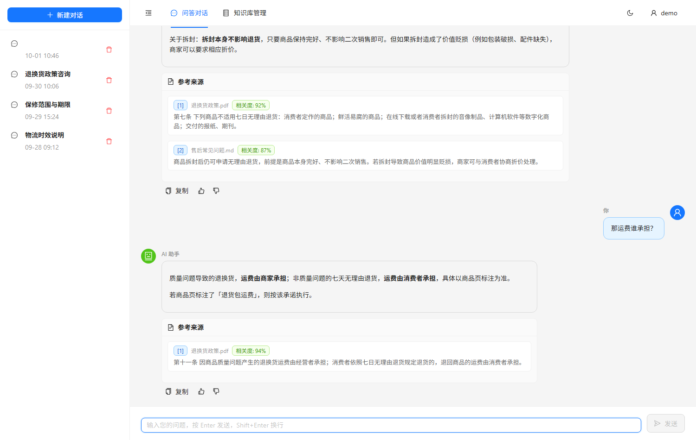
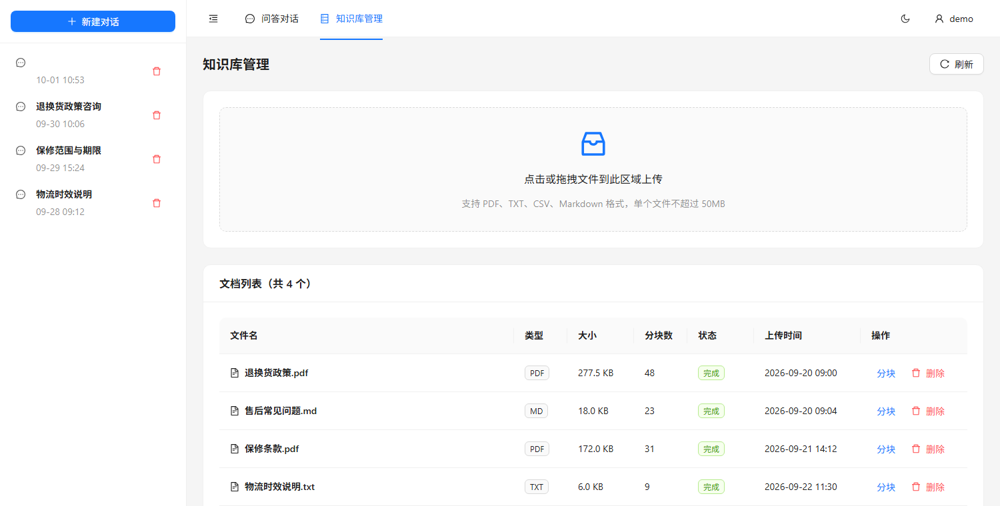

LongChainRAG
一个检索增强问答系统的完整实现：把文档灌进知识库，提问时先检索再回答， 并且每个结论都能点回到原文片段。面向电商商品知识库场景。 An end-to-end retrieval-augmented QA system: ingest documents, retrieve before answering, and let every claim link back to the passage it came from. Built for an e-commerce product knowledge base.
项目背景Background
电商场景下的商品知识分散在退换货政策、保修条款、物流说明等一堆文档里。 客服回答问题时需要逐份翻找，且不同的人对同一条政策的理解可能不一致。 直接问大模型也不行——模型不知道这些内部文档，会编造看起来合理的答案。 In an e-commerce setting, product knowledge is scattered across return policies, warranty terms, shipping notes and more. Support staff hunt through documents to answer, and different people read the same policy differently. Asking a model directly doesn't work either: it has never seen those internal documents and will invent a plausible answer.
检索增强生成（RAG）解决的就是这个问题：先从知识库里检索出相关段落， 再让模型只依据这些段落作答。这个项目是对这条链路的完整实现—— 文档入库、检索、重排序、生成、引用回溯。 Retrieval-augmented generation addresses exactly that: fetch the relevant passages first, then have the model answer only from those passages. This project is a full implementation of that chain — ingestion, retrieval, reranking, generation and citation.
核心功能Core features
| 功能Feature | 说明What it does |
|---|---|
| 知识库管理Knowledge base | 上传 PDF / TXT / CSV / Markdown，自动分块、向量化入库，可查看每个文档切出的分块Upload PDF / TXT / CSV / Markdown; automatic chunking and indexing, with the chunks of each document viewable |
| 带引用的回答Cited answers | 回答中标出每段结论来自哪个片段，附来源文件名与相似度，可展开看原文Each claim is traced to its passage, with source file and similarity score, expandable to the original text |
| 流式输出Streaming | 逐字返回，不用等整段生成完Token-by-token rather than waiting for the whole answer |
| 多用户与会话Users and sessions | JWT 认证、会话隔离与历史保存；管理员可管理知识库，普通用户只能问答JWT auth, isolated sessions, saved history; admins manage the knowledge base while regular users only ask questions |
| 语义缓存Semantic cache | 相似度超过阈值的问题直接命中缓存，省掉一次完整的检索与生成Questions above a similarity threshold hit the cache, skipping a full retrieval and generation cycle |
| 接口限流Rate limiting | 按接口限制调用频率，避免单个用户占满模型配额Per-endpoint limits so one user can't exhaust the model quota |
技术架构Architecture
RAG 里最容易被低估的一步是检索。多数人第一次做会把注意力放在提示词上， 但真正决定回答质量的是「有没有把正确的段落捞出来」——提示词写得再好，检索没召回目标段落， 模型也只能编。所以检索链路做了三层： Retrieval is the most underrated half of RAG. Most first attempts focus on the prompt, but what decides answer quality is whether the right passage got retrieved — a perfect prompt can't help if it never made it into context. So the retrieval path has three layers.
一、混合检索：向量 + 关键词1. Hybrid retrieval
纯向量检索擅长语义相近的表述，但对型号、编号、专有名词这类必须逐字命中的查询很糟—— 在语义空间里，「X200」和「X300」几乎挨在一起。所以同时跑一路 BM25 关键词检索， 再把两路结果按 RRF（倒数排名融合）合并： Pure vector search handles paraphrase well but fails on model numbers, IDs and proper nouns — the things that must match literally. In embedding space "X200" and "X300" sit almost on top of each other. A BM25 keyword pass runs alongside it, and the two result sets merge via Reciprocal Rank Fusion:
score(d) = Σ 1 / (k + rank_i(d)) （k = 60）
用排名而不是用分数融合，是这里的关键：两路检索的分数量纲根本不可比—— 余弦距离和 BM25 分数没有共同尺度，归一化只是把问题掩盖过去。排名是无量纲的，融合起来才稳。 Fusing on rank rather than score is the point: cosine distance and BM25 scores have no common scale, and normalising them just hides that. Ranks are dimensionless, so fusing them is stable.
二、重排序：保证来源多样2. Reranking with source diversity
检索回来的前几条经常来自同一份文档的相邻段落——内容高度重复，却把上下文位置全占了， 其他文档里真正相关的段落反而进不来。重排序在按相关度排序之后，先保证每份来源文档至少有一条入选， 再用剩下的名额按分数补齐。 The top hits often come from adjacent chunks of one document — near-duplicates that crowd out the context window while genuinely relevant passages from other documents never make it in. The reranker sorts by relevance, then guarantees at least one chunk per source document before filling the remaining slots by score.
这里没有引入交叉编码器模型——那会带来额外的模型下载和推理开销。 用的是检索阶段已有的分数，对当前规模足够，也保持了依赖列表的简短。 No cross-encoder is involved — that would add a model download and inference cost. Ranking uses scores retrieval already produced, which is enough at this scale and keeps the dependency list short.
三、引用回溯3. Citations
模型被要求只依据检索到的片段作答，并标注每句话来自哪一段。这既是给用户的信任依据， 也是调试检索质量最直接的手段——回答错了，看引用就知道是检索没捞到，还是模型读错了。 The model answers only from retrieved passages and marks which one supports each statement. That is trust for the reader, and it is also the fastest way to debug retrieval: when an answer is wrong, the citations say whether retrieval missed or the model misread.
技术选型Stack choices
| 层级Layer | 选型Choice | 理由Why |
|---|---|---|
| 后端Backend | FastAPI | 流式响应（SSE）是问答体验的核心，异步支持是选它的主要原因Streaming (SSE) is central to the experience; async support is the main reason for choosing it |
| 向量库Vector store | ChromaDB | 可嵌入式部署，不需要单独起服务；LangChain 原生集成Embeddable with no separate service to run; native LangChain integration |
| 关系库Relational DB | SQLite + SQLAlchemy | 存用户、会话与消息；单机部署下够用且零运维Users, sessions and messages; sufficient for single-node deployment with no operations overhead |
| 前端Frontend | React + TypeScript + Ant Design | 问答界面需要列表、上传、Markdown 渲染这些成熟组件The UI needs lists, uploads and Markdown rendering — all mature components |
界面截图Screenshots


截图中的数据为合成样例（示例商品知识库），非真实业务内容。 Data in these screenshots is a synthetic sample knowledge base, not real business content.
量化成果Outcomes
项目带一套 Locust 压力测试（100 并发用户、模拟完整的登录→建会话→流式问答流程）， 以及一个压力测试模式：打开后所有外部 API 调用被替换为确定性的模拟实现， 不需要 API Key、不产生费用就能跑通完整链路——这也是能对处理流程做端到端测试的前提。 The project ships a Locust stress suite (100 concurrent users replaying login → create session → streamed Q&A) and a stress-test mode that swaps every external API call for a deterministic stub — the whole chain runs with no key and no cost, which is also what makes end-to-end tests practical.